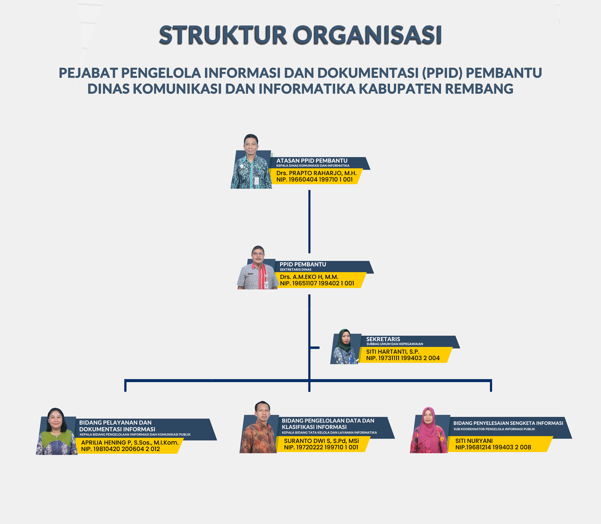

Penunjukan Pejabat Pengelola Informasi dan Dokumentasi merupakan kewajiban badan publik, dalam rangka melaksanakan pelayanan informasi yang merupakan pemenuhan hak konstitusi warga negara atas informasi. PPID secara atribusi melekat pada organisasi pemerintah daerah yang menangani pengelolaan informasi, dimana hal ini termasuk dalam lingkup urusan komunikasi dan informatika, yaitu Dinas Komunikasi dan Informatika Kabupaten Rembang. Setiap badan publik memiliki satu orang PPID yang bertanggung jawab di bidang penyimpanan, pendokumentasian, penyediaan, dan/atau pelayanan informasi di Badan Publik. Sesuai dengan ketentuan peraturan perundangan PPID ditetapkan pimpinan badan publik yang dalam hal ini adalah Bupati Rembang. Tugas dan tanggung jawab PPID adalah :
- Penyediaan, penyimpanan, pendokumentasian, dan pengamanan informasi.
- Pelayanan informasi sesuai dengan aturan yang berlaku.
- Pelayanan Informasi Publik yang cepat, tepat, dan sederhana.
- Penetapan prosedur operasional penyebarluasan Informasi Publik.
- Pengujian Konsekuensi.
- Pengklasifikasian Informasi dan/atau pengubahannya.
- Penetapan Informasi yang Dikecualikan yang telah habis Jangka Waktu pengecualiannya sebagai Informasi Publik yang dapat diakses.
- Penetapan pertimbangan tertulis atas setiap kebijakan yang diambil untuk memenuhi hak setiap orang atas Informasi Publik.
Ruang lingkup tanggung jawab PPID di badan publik Kabupaten Rembang yang mengelola seluruh informasi publik di organisasi pemerintah daerah, diperlukan tata kelola untuk menjaga sinergitas internal agar aliran informasi dapat sistematis dan efisien sehingga pelayanan informasi dapat diberikan secara cepat sesuai ketentuan. Untuk itu, berdasarkan Peraturan Menteri Dalam Negeri Nomor 35 Tahun 2010 Tentang Pedoman Pengelolaan Pelayanan Informasi Dan Dokumentasi Di Lingkungan Kementerian Dalam Negeri Dan Pemerintahan Daerah di masing-masing organisasi pemerintah daerah ditunjuk PPID Pembantu. Penunjukan PPID Pembantu di organisasi pemerintah daerah Kabupaten Rembang ditetapkan bersama dengan penunjukan PPID dengan Surat Keputusan Bupati Rembang Nomor 555/1046/2020 tanggal 4 Maret 2020tentang Penunjukan Pejabat Pengelola Informasi dan Dokumentasi di Lingkungan Pemerintah Kabupaten Rembang. PPID Pelaksana merupakan pejabat pengelola informasi di setiap OPD yang berdasarkan peraturan Kepala Daerah tentang uraian tugas dan fungsi organisasi pemerintah daerah bahwa fungsi tersebut melekat pada jabatan sekretaris OPD.
Berdasarkan Surat Keputusan Bupati tersebut, PPID yaitu Kepala Dinas Komunikasi dan Informatika meminta seluruh OPD melakukan internalisasi pengelolaan informasi publik dengan membentuk struktur organisasi PPID Pelaksana dengan melibatkan seluruh pejabat yang menguasai informasi di bidang masing-masing. Tugas PPID Pelaksana sesuai dengan Peraturan Menteri Dalam Negeri adalah :
- PPID Pelaksana bertugas membantu PPID.
- PPID Pelaksana menyampaikan informasi dan dokumentasi kepada PPID secara berkala dan sesuai kebutuhan.
Dinas Komunikasi dan Informatika Kabupaten Rembang selain mempunyai tugas dan fungsi sebagai PPID, sebagai OPD juga melaksanakan tugas dan dan fungsi sebagai PPID pelaksana yang dilaksanakan oleh Sekretaris Dinas. Untuk mendukung pelaksanaan tugas tersebut dibentuk tim dengan Surat Keputusan Kepala Dinas Komunikasi dan Informatika Kabupaten Rembang Nomor :555/167/2020 tentang Pejabat Pengelolaan Informasi dan Komunikasi (PPID) Pelaksana Dinas Komunikasi dan Informatika Kabupaten Rembang
Struktur Organisasi PPID 